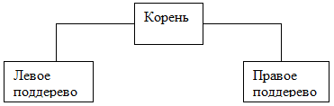

1. Краткие теоретические сведения
• Бинарное дерево – это динамическая структура данных, состоящая из узлов, каждый из которых содержит, кроме данных, не более двух ссылок на различные бинарные деревья. На каждый узел имеется ровно одна ссылка.
• Описать такую структуру можно следующим образом:
• Если дерево организовано таким образом, что для каждого узла все ключи его левого поддерева меньше ключа этого узла, а все ключи его правого поддерева — больше, оно называется деревом поиска. Одинаковые ключи не допускаются. В дереве поиска можно найти элемент по ключу, двигаясь от корня и переходя на левое или правое поддерево в зависимости от значения ключа в каждом узле. Такой поиск гораздо эффективнее поиска по списку, поскольку время поиска определяется высотой дерева, а она пропорциональна двоичному логарифму количества узлов.
• В идеально сбалансированном дереве количество узлов справа и слева отличается не более чем на единицу.
• Линейный список можно представить как вырожденное бинарное дерево, в котором каждый узел имеет не более одной ссылки. Для списка среднее время поиска равно половине длины списка.
• Деревья и списки являются рекурсивными структурами, т. к. каждое поддерево также является деревом. Таким образом, дерево можно определить как рекурсивную структуру, в которой каждый элемент является:
либо пустой структурой;
либо элементом, с которым связано конечное число поддеревьев.
• Действия с рекурсивными структурами удобнее всего описываются с помощью рекурсивных алгоритмов.
• Описать такую структуру можно следующим образом:
struct point
{
int data;//информационное поле
point *left;//адрес левого поддерева
point *right;//адрес правого поддерева
};• Если дерево организовано таким образом, что для каждого узла все ключи его левого поддерева меньше ключа этого узла, а все ключи его правого поддерева — больше, оно называется деревом поиска. Одинаковые ключи не допускаются. В дереве поиска можно найти элемент по ключу, двигаясь от корня и переходя на левое или правое поддерево в зависимости от значения ключа в каждом узле. Такой поиск гораздо эффективнее поиска по списку, поскольку время поиска определяется высотой дерева, а она пропорциональна двоичному логарифму количества узлов.
• В идеально сбалансированном дереве количество узлов справа и слева отличается не более чем на единицу.
• Линейный список можно представить как вырожденное бинарное дерево, в котором каждый узел имеет не более одной ссылки. Для списка среднее время поиска равно половине длины списка.
• Деревья и списки являются рекурсивными структурами, т. к. каждое поддерево также является деревом. Таким образом, дерево можно определить как рекурсивную структуру, в которой каждый элемент является:
либо пустой структурой;
либо элементом, с которым связано конечное число поддеревьев.
• Действия с рекурсивными структурами удобнее всего описываются с помощью рекурсивных алгоритмов.
2. Обход дерева
Для того, чтобы выполнить определенную операцию над всеми узлами дерева, все узлы надо обойти. Такая задача называется обходом дерева. При обходе узлы должны посещаться в определенном порядке. Существуют три принципа упорядочивания. Рассмотрим дерево, представленное на рисунке 1: 
Рисунок 1 – Бинарное дерево
• На этом дереве можно определить три метода упорядочивания:
Слева направо: Левое поддерево – Корень – Правое поддерево;
Сверху вниз: Корень – Левое поддерево – Правое поддерево;
Снизу вверх: Левое поддерево – Правое поддерево – Корень.
• Эти три метода можно сформулировать в виде рекурсивных алгоритмов.
void Run(point*p)
//обход слева направо
{
if(p)
{
<обработка p->data>
Run(p->left);//переход к левому поддереву
Run(p->right);//переход к правому поддереву
}
}